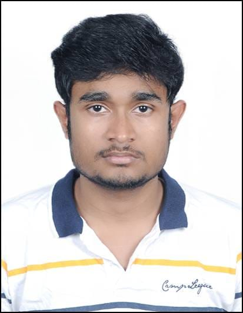

Professional summary and career objectives.
ICT-IOC Bhubaneswar | Expected June 2026 | CGPA: 8.06
Jeevan Jyoti Public School | 2020 | 75.2%
Jawahar Navodaya Vidyalaya, Nawada | 2018 | 84%
Nagpur | Jun 2025 – Nov 2025 | Process Engineering Intern
Paradeep | Nov 2024 – Feb 2025 | Process Engineering Intern
Barauni | Sept 2022 – Nov 2022 | Vocational Trainee
Taipei, Taiwan | Apr 2024 - Jun 2024 | Research Internship
Bengaluru | Sep 2023 - Nov 2023 | Research Internship
2023 | ICT-IOCB | Mar 2023 - Jun 2023 | Research Intern
Waste cooking oil conversion research.
Seminar on In-Situ Maintenance of Heat Exchangers.
Stability studies of nanosuspensions for enhanced performance.
Software skills | material Characterisation skills | Research Skills.
Mentored 10 incoming students for academic adaptation.
Served as a Group leader.
Established and led the Yoga Club at JNV Nawada.
Health, wellness, and leadership through yoga.
Strategy and critical thinking exercises.
Co-curricular certifications and workshops.